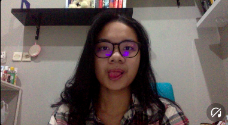

WELCOME TO MY PAGE
tak kenal maka kenalan
, begitulah kata pepatah. Nah, disini aku akan bercerita sedikit tentang diri aku ;)

cek instagram aku yaa buka
1. Profil
Perkenalkan nama Aku Hajdah Aleyda dan biasanya dipanggil Alley. Aku lahir di Surabaya, 19 Oktober 2002. Saat ini saya berumur 18 tahun dan sedang menjalani perkuliahan di Institut Teknologi Sepuluh Nopember jurusan Sistem Infromasi.
Saya merupakan anak satu2nya dan saat ini berdomisili di Jakarta. Saat SD, aku bersekolah di SD Muhammadiyah 5 dan melanjutkan sekolah di SMP Labschool Kebayoran. Setelah itu, aku menempuh pendidikan atas di SMAN 34 Jakarta. Selama bersekolah, aku mengikuti beberapa perlombaan dan kepanitiaan sehingga melatih skill saya. Nah, saat berkuliah, aku mengikuti beberapa kepanitiaan juga seperti ISE! 2021, magang di Himpunan Mahasiswa SI di dept. IA, dan juga panitia acara UKM.
2. Hobi
Aku memiliki beberapa hobi. Apalagi adanya pandemi ini membuat aku mencoba hal-hal baru, seperti bermain valorant dan mencoba hal-hal yang berbau design, salah satunya UI/UX design.Saat ini aku juga sedang membuat portofolio mengenai UI/UX design. Selain dalam technical, saya juga memiliki hobi memasak, bermusik, dan membaca buku. Saat ini, saya sedang fokus membaca novel berbahasa inggris dengan genre fiksi dan ingin meng-explore genre lainnya. Dulu sebelum ada pandemi, saya hobi berenang, tetapi karena lockdown, saya tidak bisa melakukan aktivitas itu.
3. Hewan Favorit
Hewan favoritku adalah kucing. Aku ingin sekali punya kucing, tetapi orang tuaku tidak suka kucing, jadi aku kasih foto kucing dari internet aja;).
BIODATA
- jenis : kucing anggora
- nama samaran : Tono
- umur : 1 tahun
4. Perbedaan Kehidupan Online dan Offline
Selama menjalani kehidupan offline dan online, tentu ada banyak perbedaan dan adaptasi yang harus dilakukan. Berikut perbedaannya :
| Offline | Online |
|---|---|
| bisa keluar rumah | tidur, liat laptop, dan looping |
| ga harus make masker | harus pake masker, gabisa bernapas bebas |
| lebih berinteraksi dengan manusia | people is bad, just stay at home |
XOXO